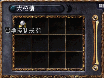

|
2003年6月9日
韓國測試伺服器檔案內容
來源：Jaja no ouchi
今天韓國測試伺服器更新了十五張不同地域的地圖檔，外型與目前的傲慢之塔非常相似，難度原設定有100層的傲慢塔將會在目前只有10層的開始擴建？還是這是新的高塔？有關圖片大家可以到Jaja no ouchi觀看。
台灣天堂金氏記錄 - 等級最高玩家
鳴謝玩家dfr219提供資料，內容如下：
伺服器：戰神伺服器
角色名稱：娜希雅
等級：Lv71
體力：HP 900
武器：+10大馬
裝備：古金甲，+7騎面，+9精盾(或+5伊盾)，+7力套，+7鋼長靴等
願望：超過韓國等級最高玩家，成為世界第一的高手
巴風特也會掉召戒

鳴謝香港愛神玩家大粒糖提供消息，她在無限大戰中的巴風特裡打到召喚控制戒指呢！暫時已知會掉召戒的怪有幼龍、四色長老、死亡騎士及巴風特。
韓國伺服器52+級人數統計
來源：韓國天堂官方網站公告
當中有很多有趣的要點：
1. 全韓國伺服器共有46名死騎王族，但只有1名死騎公主。
2. 男騎士的數目是女騎士的11.3倍。
3. 女妖精的數目是男妖精的7.5倍。
4. 騎士的總數佔了全體52+級的73.4%。
5. 全韓國伺服器共有10,918名死騎級角色，假設升1名52級角色需要500小時的時間，他們共花了最小623年的光陰。 |